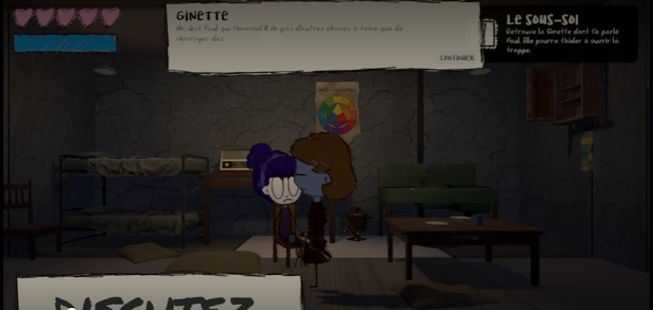
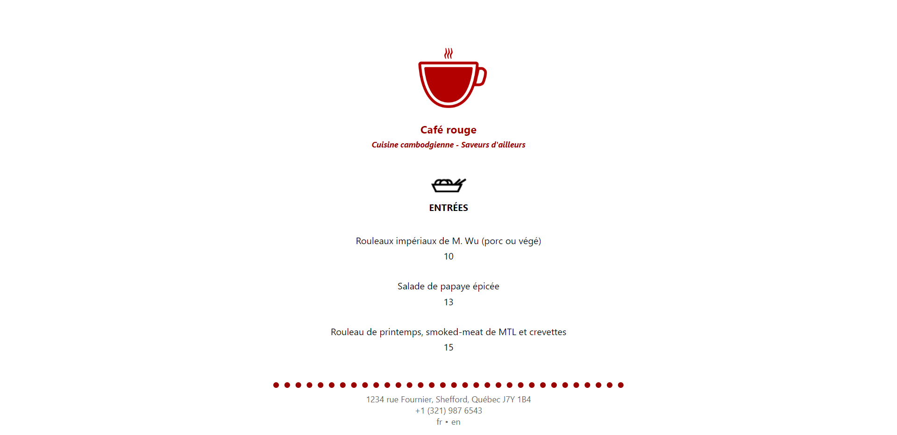
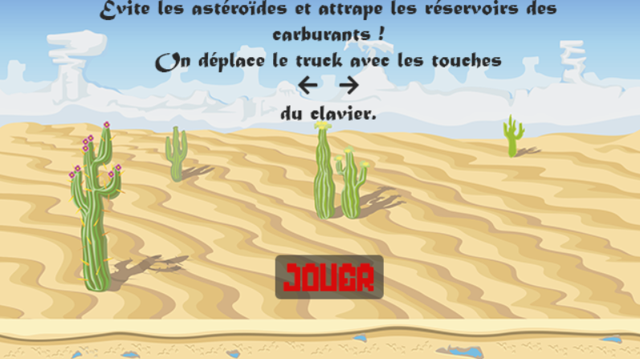
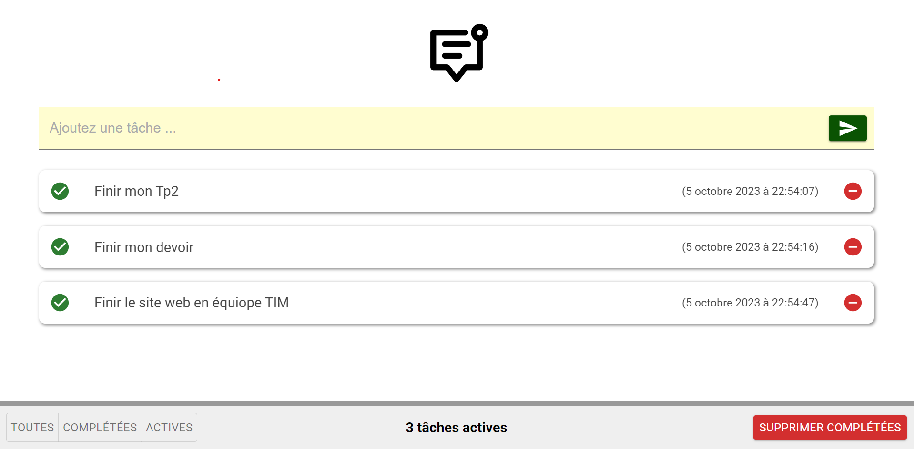
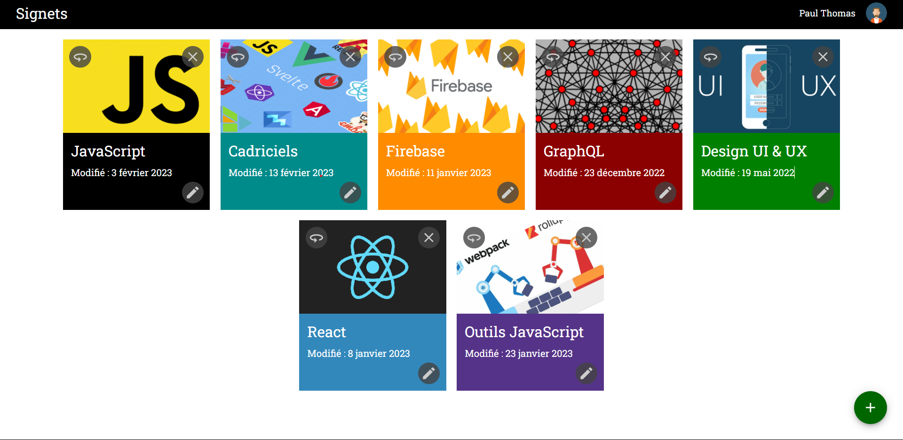
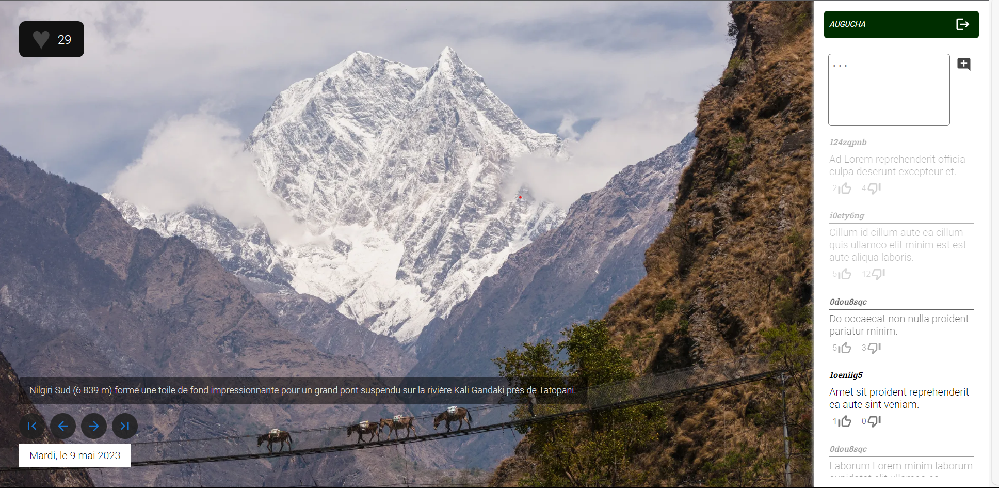

Mes projets
Projet 1

Pendant une session collégiale de quatre mois, nous avons travaillé en équipe de quatre personnes pour créer un jeu à la fois en 3D et en 2D.
J'ai contribué en tant que membre de l'équipe en m'occupant de la programmation des interfaces et de l'intégration des scènes à l'aide de GitHub Desktop.
Technologies Utilisées : C Sharp, Unity
Voir le Projet
Projet 2

Création d'un site web simple bilingue en français et en anglais, aussi facile à utiliser que dire bonjour.
Technologies Utilisées : Html, Css, React
Voir le Projet
Projet 3

Développement d'un jeu en 2D en utilisant la technologie Canvas pour une expérience interactive et divertissante.
Technologies Utilisées : Html, Css, JavaScript
Voir le Projet
Projet 4

Une application de liste de tâches React avec Firebase qui simplifie la gestion des tâches en permettant l'ajout et la suppression facilement.
Technologies Utilisées : React, JavaScript, FireDatabase, Sass
Voir le Projet
Projet 5

Une application permettant la modification ou la suppression de tâches existantes, bien que son fonctionnement ne soit que partiel.
Technologies Utilisées : React, Sass
Voir le Projet
Projet 6

Une application monopage React nommée 'Image du Jour', conçue pour permettre aux utilisateurs de commenter des images de manière similaire à Instagram. Cette réalisation a été accomplie en collaboration avec le professeur en classe.
Technologies Utilisées : React, FireDatabase, Sass
Voir le Projet